西九文化區建設了那麼多年, 是香港近年來的發展重點, 我和 Kathy 至今都沒有去過, 所以安排今天 一起去遊覽。從地圖上來看, 西九文化區沿海而建, 環境應該不錯, 而且面積相當大, 便計劃作一天遊。
早上搭乘港鐵東涌線到九龍站, 下車後, 滿以為會有完善的天橋從地鐵站連接到西九文化區, 想不到要沿交通繁忙、汽車廢氣紛天的馬路走, 然後穿過一條天橋才到達西九文化區的入口, 一開始已經對這行程大打折扣。
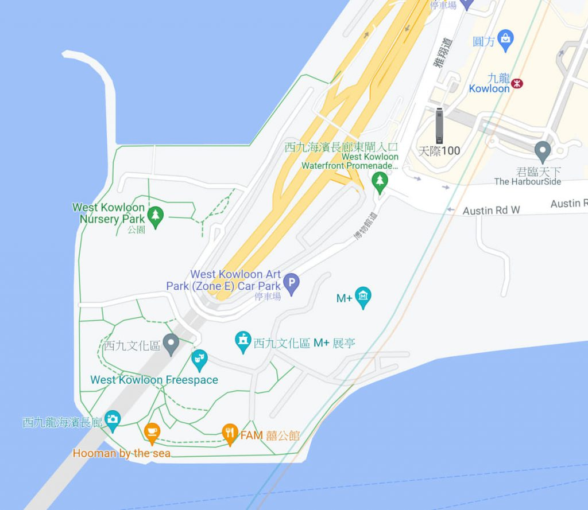西九文化區入口處附近一帶還好像地盤一樣, 四處雜草叢生, 很難相信已經發展了二十多年。更令人難以置信的是, 公園和大部份設施都仍然在建設中, 禁止遊客進入!
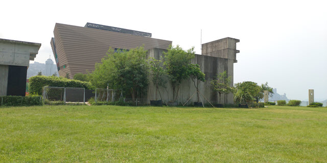 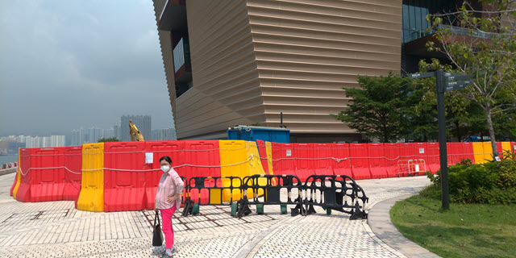 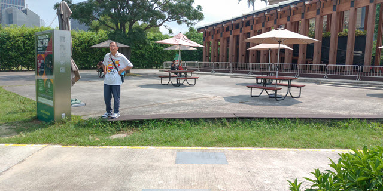總結來說, 西九文化區只有海濱步道可以遊覽, 真是大失所望。
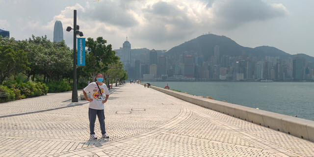 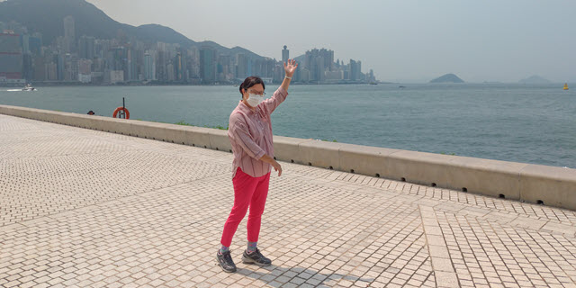原本安排一天遊的行程, 結果最後只用了約一小時, 匆匆打了一圈便離開。多出那麼多時間, 便改為到附近的尖沙咀逛逛。
因佐敦東涌街市附近有一間叫 Blue Ocean Restaurant and Cafe 的尼泊爾餐廳, 每天都供應自助午餐, 價錢也十分大眾化, 便決定步行到那裡吃午餐。
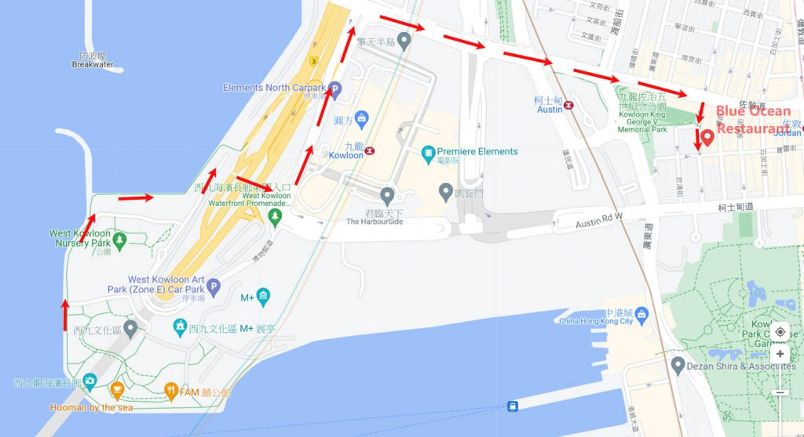Blue Ocean Restaurant and Cafe 設在上海街一間商業大樓的 1/F, 如果不是 Kathy 的尼泊爾朋友曾經帶她來吃午餐, 相信很難會發現的。
Blue Ocean Restaurant and Cafe 的自助午餐有烤雞翼, 牛肉, 烤薄餅, 炒菜, 炒飯, Mo Mo (水餃), 湯, 汽水等等, 尚算豐富。
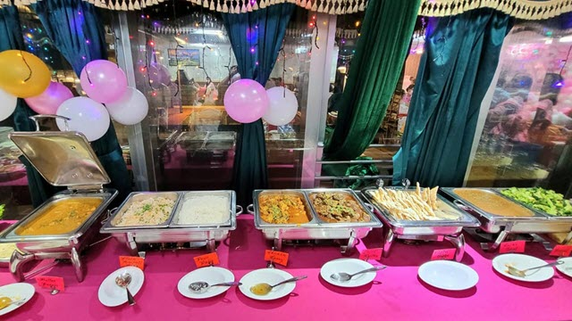 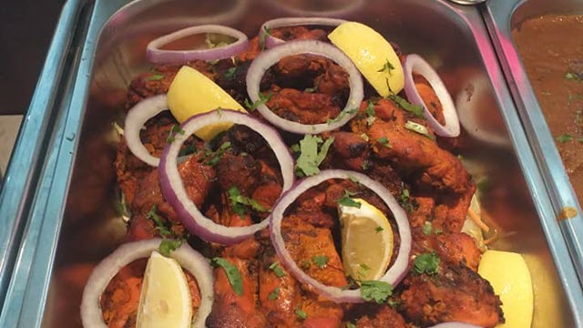 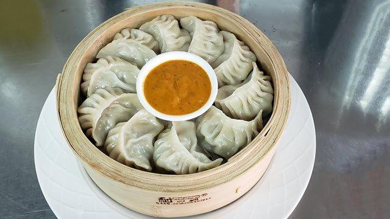吃完午餐, 便步行到尖沙咀的九龍公園遊覽。
我於60年代在尖沙咀的一間學校就讀中學, 每天都經過現時的九龍公園, 當時還是威菲路軍營, 還有一間義莊。1968年, 軍營移交市政局, 並於1970年開闢為九龍公園, 是九龍區第二大的公園。所以, 我是見證九龍公園的興建, 去過應該不下一百次吧!
或者有朋友會問, 香港60年代的交通並不發達, 主要依靠班次疏落、經常飛站的巴士, 荃灣有那麼多學校, 為什麼偏偏走到老遠的尖沙咀讀書?
理由很簡單, 就是為了增廣見聞。 60年代的荃灣根本是一個鄉村, 自然想見識外面繁榮的世界, 而當時的尖沙咀正是香港最潮、最現代化的地區。
在尖沙咀讀書的幾年的確「見識」了很多: 學會了去北京道的無上裝酒吧; 學會了花錢去喜來登地庫吃下午茶和頂層 Sky Lounge 飲酒; 晚上在尖沙咀的酒吧四處蒲, 在星光行打保齡球和打波子機…. 等等不應該在讀書時做的東西!
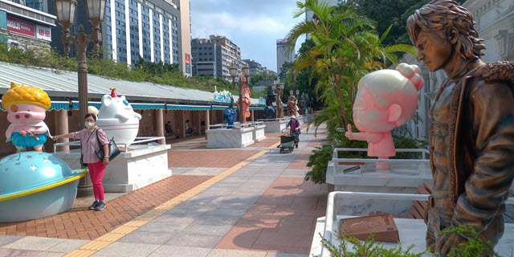 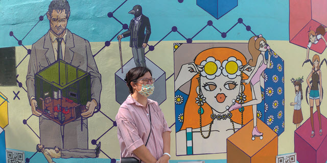 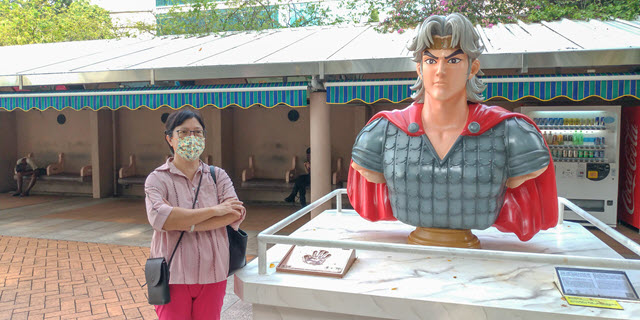我們在柯士甸道進入九龍公園, 隨便的四處逛了一會, 然後沿彌敦道、麼地道走, 拐進緬甸臺, 便來到訊號山公園山下的入口。
沒來訊號山公園很多年了, 讀中學時經常來, 工作時每次到尖沙咀海員俱樂部吃晚飯, 也會間中順道來這裡散步和看風景。
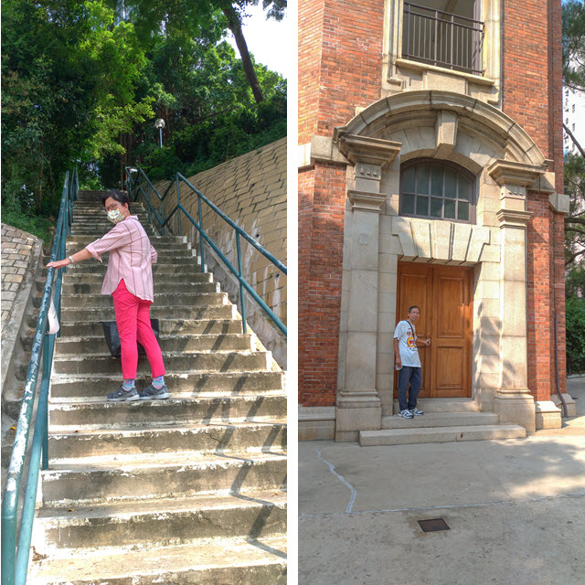 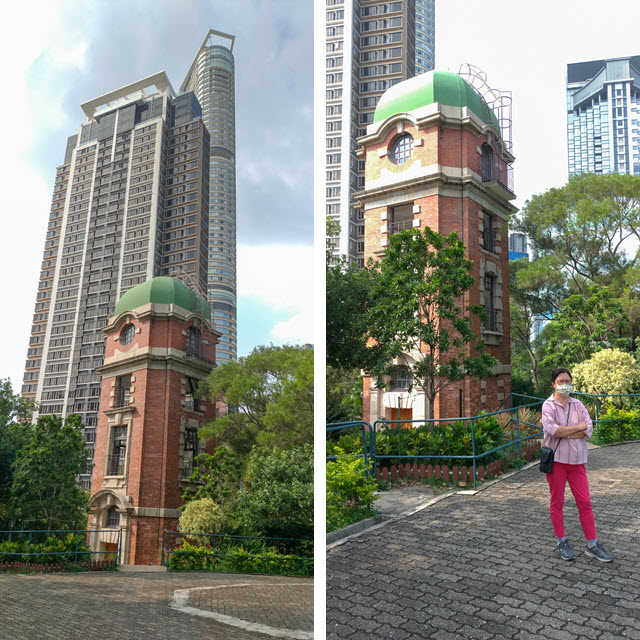 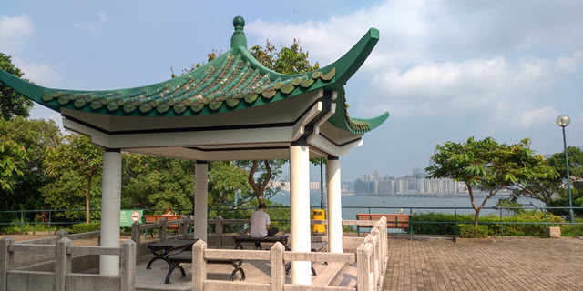 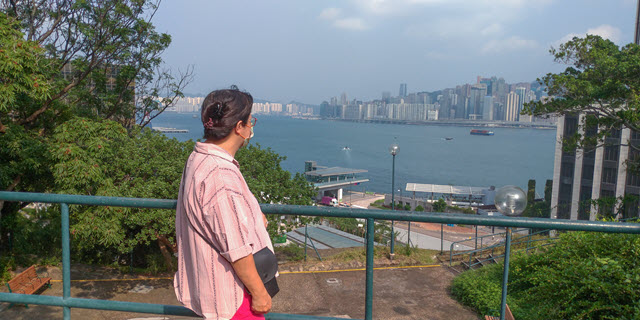訊號山公園最大特色是建於山坡上的訊號山訊號塔, 是一座幽雅的紅磚建築物。訊號山訊號塔建於1907年, 當時用作報時和懸掛風球訊號之用, 至今已經有百多年歷史。
隨著時代的進步, 訊號山訊號塔於1933年被棄用。
1980年, 訊號山及訊號塔進行復修工程, 並於 1981年開闢成訊號山花園。
現時的訊號塔和我讀書時所看到的沒有多大分別, 只是附近多了很多高樓大廈, 感覺上沒有當年一柱擎天那麼雄偉莊嚴!